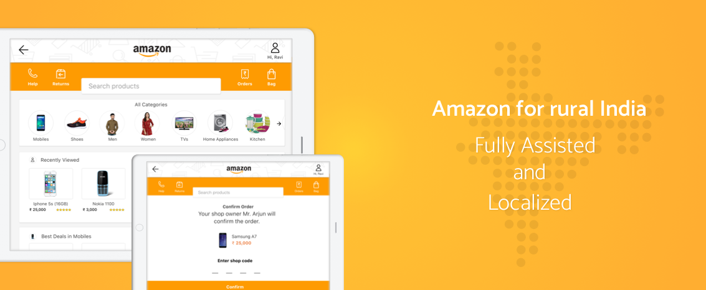
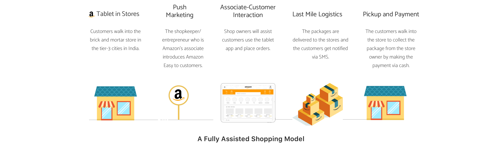
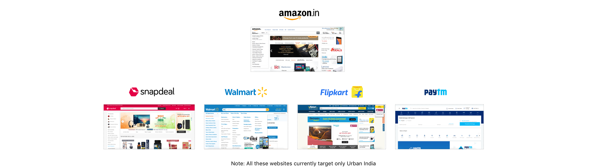
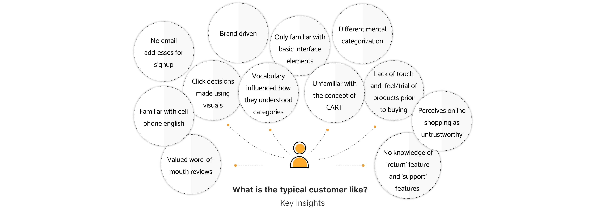
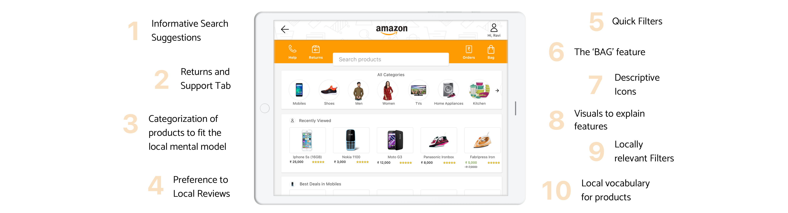
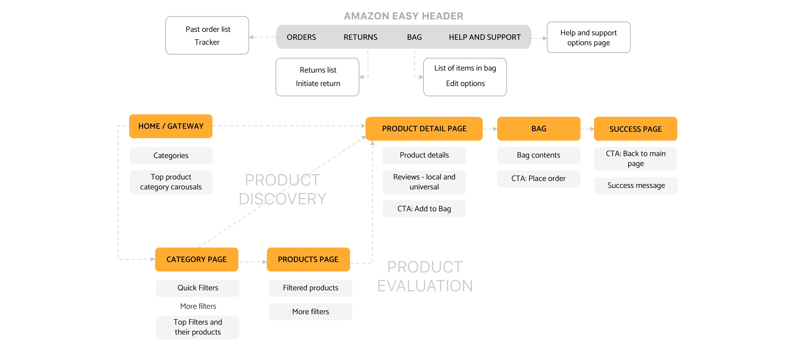
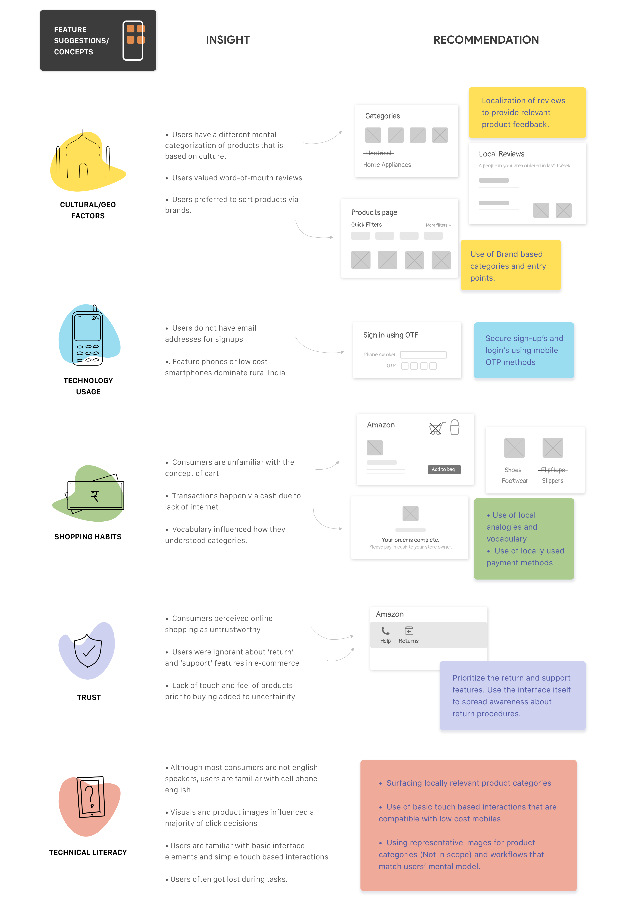

Amazon Easy.
UX Design Internship at Amazon India
Worked with the New Initiatives Team (marketing + tech team) at Amazon India for designing an e-commerce shopping experience for Rural India. Followed a user centered design methodology: conducted user research, designed new workflows for the Amazon Easy (code named 'UDAAN' ) tablet app and delivered prototypes for the core flows. Certain details are omitted due an NDA.
Duration: May 2015 - July 2015
Manager: Mr. Zahid Khan, Marketing Head, New Initiatives Team.

The Problem
India is a mobile first nation where people where people access internet mostly through prepaid data and where there is only 1 hotstop per 3,900 people. Hundreds of millions of users face transaction barriers due to flaky internet, payment methods and other reasons such as trust, language, lack of access and education. Amazon's mission to enable everybody in India shop online led to the creation of Amazon Easy (Udaan).
What is Amazon Easy?
Amazon Easy relies on a fully-assisted shopping model. Amazon Easy is a service that will place tablet devices loaded with the Amazon Easy app at the brick and mortar stores/points in tier 3+ towns in India.
Competitor Audit
The product discovery and product evaluation flows are largely consumer driven and tend to be the primary flows to increase conversion in. In order to know the state of art, I conducted a competitve analysis of the product discovery and product evaluation paths, features involved and UI standards of popular e-commerce sites in India.
User Research: Rural India and e-commerce
In order to understand how rural India perceives and uses e-commerce, I went to two villages in India. I used contextual enquiries and think aloud protocols to understand the background of buyers and shopkeepers, mental models and needs. The think aloud protocols with the initial pilot prototype helped me observe familiarity with interface elements, understand customer paths with different levels of purchasing clarity. In order to test flows that weren't a part of the pilot product, paper prototypes were used.

Key Insights: The Average User
The primary user is the customer who walks into the brick and mortar store and the secondary user is the shopkeeper who operates the store alogn with guiding the customer with the Amazon Easy App.

The Current Customer Journey
The think aloud protocol with the pilot app unveiled the users' frustrations and needs at every point in the product discovery and evaluation process and their exposure to technology and e-commerce. The customer journey map below illustrates them:

The core features of the solution
We came up with higher level product features that would be applied to individual product components and in some cases the whole product itself.
Task Flows Redesigned
Based on themes that emerged from affinity mapping, new product features were proposed and based on mental models of users and their capabilities, new user flows were made.
 Wireframes and detailed features
The next step was to create detailed wireframes and iterate on them using the team's feedack. The screens that are part of the core user journey are explained in detail below.
The Final Design
The higher fidelity mocks are avoided due to a NDA. Throughout the 2 months, I presented the research findings and new task flows to several product teams and went through a round of critique and feedback.
Wireframes and high fidelity clickable wireframes were made. Based on expert review and feedback from managers, I made changes in every successive iteration. I delivered a full UX specification document with wireframes and mock-ups. No final product details or names are included here due to a Non-Disclosure Agreement.
What I Learnt?
Co-design is always helpful to provide increased knowledge and empathy with potential users. It helps with more confident decision making esp. while designing a new type of service or introducing a piece of technology to which users have never been exposed to.
Just thinking in terms of re-designing the existing product does not help while trying to fit the product into a new user's life. Often, it requires re-thinking of the how a service can fit and empower. It might involve changing of revenue models and big business decisions.
Culture plays an important role in trust. It is important to understand what the primary and secondary users are sensitive to and what they are willing to accept.
It is also important to think about the loading times and design for low internet speeds.
In contexts where word-of-mouth reviews are so significant, it was important to think about how build trust in the service and build trust in the products they bought.
I learned the User Centered Design methodology followed at Amazon, that I find useful to refer back to in my work. I learned working directly, and communicating seamlessly with developers and learned periodic work presentation for critique sessions. I was guided by an amazing manager, who taught me a great deal about the product based industry and data analysis techniques.